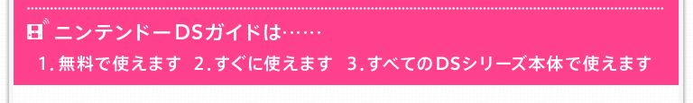 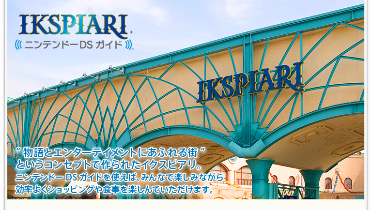
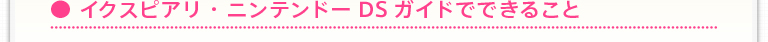
| 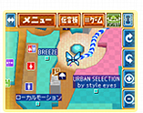 | 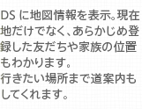 |
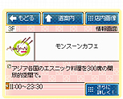 | 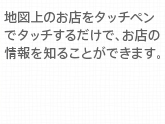 | |
| 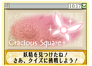 | 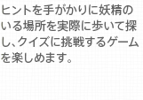 | 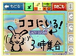 | 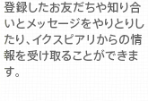 | |
| 舞浜駅の改札を出て目の前に現れたのは、大きなイクスピアリの門。取材日は、土曜日ということもあって、たくさんの人でにぎわっていました。いつもは、すぐに東京ディズニーランドに向かうこともあるのですが、今日は大勢の家族連れ・カップルに混じってゆっくりイクスピアリを満喫します。 ニンテンドーDSガイドは、「DSダウンロードプレイ」で、ソフトをダウンロードするところから始まります。「IKSPIARI ニンテンドーDSガイド」と書かれたステッカーがダウンロード可能なスポットの目印。 |
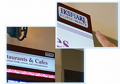 |
| 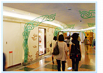 | 大きなショッピングセンターで買い物をしているとき、気になったお店が見つか ったけど、なんとなく気後れして入らずじまい…といった経験はありませんか？さらに、優柔不断で、方向オンチな私は、おでかけの後で、有名なお店を素通りしてしまったことを知ってがっかりすることがよくあります。でも、ニンテンドーDSガイドなら大丈夫。イクスピアリの中には140店にも及ぶショップやレストランが、4フロア9ゾーンに分かれて集まっていますが、ニンテンドーDSガイドで、歩きながら気になるお店をチェックできるので、話題のお店も見逃しません。もちろん、近くのお店だけでなく、離れた場所のお店の情報も調べられます。お目当てのお店が見つかれば、妖精に道案内してもらうこともできるので、迷う心配もなくなりそうです。 |
| もし、一緒に来ている友だちもDSを持っていたら、ぜひみんなで「メンバー登録」を試してみてください。登録方法は画面に従ってDS同士を近づけるだけ。登録することで、メンバーがどこにいるかが一目瞭然です。 |
| 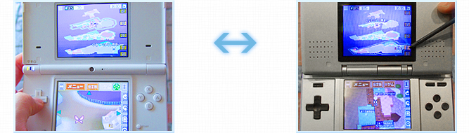 |
| これだけ広ければ、一度別れてからそれぞれに買い物をして、時間を決めて集まることもあるでしょうし、はぐれてしまったときの連絡など、地図と連動してメッセージを伝えられるのでとても便利です。友だちや恋人同士だけでなく、親子連れの方にも役立ちそうだと思いました。 さらに、イクスピアリの中で自分の足を使って楽しむゲームも体験できます。『Find Me』は画面に表示された写真と同じ場所を、館内で探し、課題に挑戦するゲーム。このゲームに出てくる写真の場所は、イクスピアリの中でも綺麗な景色や印象的なオブジェが多いので、見つけたときは思わず声を上げてしまいました。 |
| 伝言板には、登録したメンバーとのやりとり以外にも、「○○時から◇◇が数量限定販売！」というメッセージが届くこともあります。そのメッセージからお店の詳細情報を見れば、そのままナビゲーション画面にも切り替えられます。気になる限定商品を買い忘れないためにも、DSが役立ちます。 |
| イクスピアリには何度か行ったことがありますが、ニンテンドーDSがあると、また違った楽しみ方ができました。東京ディズニーリゾートにDSを持っていかれる方も多いと聞きます。そんなときは、お試しでイクスピアリでDSを開いてみてください。イクスピアリをもっと楽しむためのヒントがきっとあるはずです。 | |